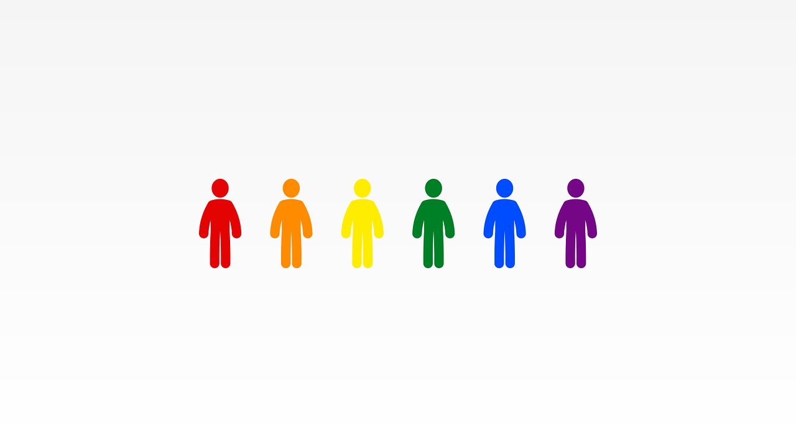

Gender Stereotypes and Their Detrimental Effects on Mental Health
PROPOSED SOLUTION
Mandatory Diversity Education
By educating people about diversity, we can get right to the heart of the problem and prevent gender stereotypes from flourishing.
Educating people about diversity can help counter stereotyping and ignorance of the law, while also increasing their understanding of the benefits of both diversity and inclusion (Bell et al., 2009).
Even just being exposed to diversity itself can help in solving the problem. Through being exposed to diversity itself, people can also be introduced to different perspectives other than their own, changing their behavior in the process (Phillips, 2014).
With diversity education, gender stereotypes can be eliminated for good, improving mental health. By fostering understanding through diversity education, we make the world a safer and comfortable place for everyone involved.
Why not Anti-Discrimination Laws?
Gender stereotypes are something that many people carry with them throughout their lives, whether unknowingly or not.
Anti-discrimination laws can mitigate the problem temporarily, but it does not change the fact that people can and will continue to stereotype due to what they believe in. No matter how much we punish those who discriminate, there will be others who will, as long as they retain their gender stereotypes.
Similar Laws in Action: Anti-Bullying Laws
The anti-bullying laws implemented in many schools around the world share a similar nature with anti-discrimination laws. In some countries, however, the anti-bullying law is followed with zero tolerance.
Cornell and Limber (2015) note in their paper that there has been criticism in the past regarding zero tolerance policies that impose strict penalties due to how they disregard the needs of the bullies themselves, are unnecessarily severe, and the chilling effect they send to those who report the act. In contrast, they agree that preventive approaches are more promising solutions to the problem.
Another research also revealed that psychosocial prevention programs held by schools were effective in preventing and reducing aggressive behaviors such as bullying, name-calling, and the like (2007).

The Change We Need
Providing mandatory diversity education will be essential in addressing the problem. Through it, we can mitigate gender stereotypes and their negative effects on people's lives, especially when it comes to mental health.
Slowly, alongside the implementation of anti-discrimination laws, more places around the world are beginning to require diversity education.
The battle, however, is far from done.
This is a problem that will take a tremendous amount of time and effort to solve, but once it is, its impact will touch billions.
Not only will it improve the mental health of many, but it will also help improve the state of our world today.
By simply taking the time to understand each other, we take a step forward in solving the problem.
Little by little, no matter how long it takes, this problem can and will be solved.
All it takes is a step in the right direction.